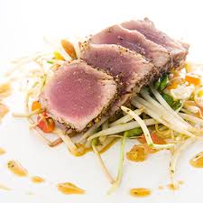

Medaillon de Thon au Gingembre
Vous pouvez accompagner le thon d'une fine semoule à couscous parfumée à la coriandre.
Ingrédients
- 1 filet de thon fluo de 300 g environ
- 1.5 cg tranches de pain de mie
- 25 g de gingembre
- 2.5 cl de vin blanc sec
- 5 g de raisins secs blonds
- 125 g de beurre
- 10 g de pignon de pin
- 160 g de pois gourmands pour l'accompagnement
- 5 cl de crème liquide
- 1 échalote
- 1/4 de botte de persil plat
- 1/4 de botte de ciboulette
- Quelques feuilles de sauge
- l'huile d’olive
- sel et du poivre
Recette
- Pour réaliser un beurre blanc au gingembre, éplucher et hacher le gingembre et l’échalote. Mettre cette dernière dans une petite casserole avec le vin blanc, poser sur feu doux et laisser frémir jusqu’à réduction du liquide, puis ajouter la crème. Porter à nouveau à ébullition. Hors du feu, incorporer le beurre (75 g) en morceaux au fouet. Ajouter le gingembre haché. Réserver au chaud au bain-marie.
- Effiler les pois gourmands, les laver, les faire cuire 6 minutes à l’eau bouillante salée, les plonger dans l’eau glacée, les égoutter. Retirer la croûte du pain de mie, détailler les tranches en petits dés, hacher les raisins secs et les pignons. Effeuiller et émincer le persil et la sauge, hacher la ciboulette.
- Portionner le thon en 2 tournedos. Poêler le pain de mie et les pignons de pin dans le beurre restant. Ajouter les raisins secs, la ciboulette, le persil et la sauge ciselés. Poêler le thon dans l’huile d’olive fumante pendant environ 5 minutes sur toutes les faces.
- Trancher le thon en trois médaillons par personne. Disposer le mélange chapelure-herbes sur le thon. Servir avec les pois gourmands et le beurre blanc au gingembre.